Preparing data
There are a few scripts that run all necessary data preparations for training and inference.
Sample plotting
This script will plot composite images such as true color, color infrared and shortwave infrared for quick visual inspection. It will also generate plots for each image presenting aforementioned composites together with NDVI, DEM, QA Mask and Kelp Mask. An example can be seen below:
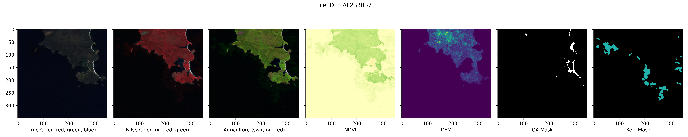
make sample-plotting
Or:
python ./kelp/data_prep/sample_plotting.py \
--data_dir data/raw \
--metadata_fp data/raw/metadata_fTq0l2T.csv \
--output_dir data/processed
For the same tile following composites are plotted:
- DEM:
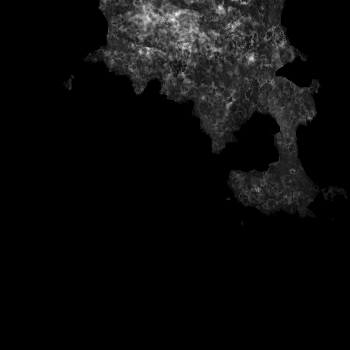
- True Color:
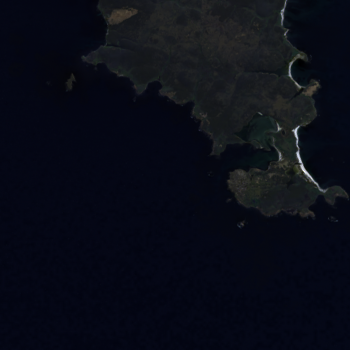
- Color Infrared:
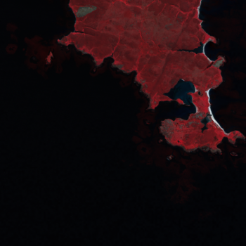
- Shortwave Infrared:
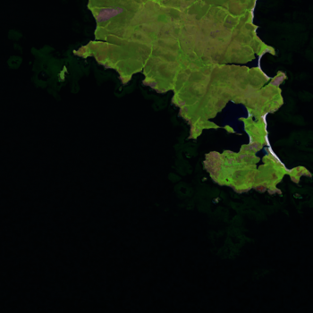
AOI Grouping
This script will group similar images into AOIs (Areas Of Interest) which then can be used to perform Stratified K-Fold Cross Validation split.
make aoi-grouping
Or:
python ./kelp/data_prep/aoi_grouping.py \
--dem_dir data/processed/dem \
--output_dir data/processed/grouped_aoi_results/sim_th=0.97 \
--metadata_fp data/raw/metadata_fTq0l2T.csv \
--batch_size 128 \
--similarity_threshold 0.97
The script will save results in the specified output_dir.
.
├── final_image_groups_similarity_threshold=0.95.json <- final list of simalr images
├── intermediate_image_groups_similarity_threshold=0.95.json <- intermediate result of similarity calculation
├── merged_image_groups_similarity_threshold=0.95.json <- deduplicated list of similar images
└── metadata_similarity_threshold=0.95.parquet <- final metadata parquet file created from the final list of similar images
The metadata parquet file is just the metadata CSV file, but with an additional column aoi_id denoting the AOI ID.
EDA
Exploratory Data Analysis scripts are calculating basic statistics about each image and then plotting them as distribution plots.
Run it with:
make eda
Or:
python ./kelp/data_prep/eda.py \
--data_dir data/raw \
--metadata_fp data/processed/grouped_aoi_results/sim_th=0.97/metadata_similarity_threshold=0.97.parquet \
--output_dir data/processed/stats_97
For each image the script will calculate following statistics:
has_kelp- a flag indicating if the image has kelp in itnon_kelp_pixels- number of non-kelp pixelskelp_pixels- number of kelp pixelskelp_pixels_pct- percentage of all pixels marked as kelphigh_kelp_pixels_pct- a flag indicating that the kelp pixels denote over 40% of the whole imagedem_nan_pixels- number of NaN pixels in the DEM layerdem_has_nans- a flag indicating if DEM layer has NaN valuesdem_nan_pixels_pct- percentage of all DEM pixels marked as NaNdem_zero_pixels- number of zero valued pixels in the DEM layerdem_zero_pixels_pct- percentage of all DEM pixels with value=zerowater_pixels- estimated number of water pixels (pixels with value <= zero)water_pixels_pct- percentage of water pixels in the DEM layeralmost_all_water- a flag indicating that over 98% of the DEM layer pixels are waterqa_corrupted_pixels- number of corrupted pixels in the QA bandqa_ok- a flag indicating that no pixels are corrupted in the QA bandqa_corrupted_pixels_pct- percentage of corrupted pixels in the QA bandhigh_corrupted_pixels_pct- a flag indicating that over 40 % of the QA bands' pixels are corrupted
Calculated statistics will be saved in the specified output directory in parquet format.
Apart from figures, the script will also display and save descriptive statistics such as min, max, median etc. for each of the numerical statistics.
| statistic | aoi_id | non_kelp_pixels | kelp_pixels | ... | qa_corrupted_pixels_pct |
|---|---|---|---|---|---|
| std | 662.475 | 2695.318 | 2695.318 | ... | 0.138 |
| min | 0 | 8937 | 0 | ... | 0 |
| mean | 1479.905 | 121670.837 | 829.163 | ... | 0.07 |
| max | 2947 | 122500 | 113563 | ... | 0.999 |
| count | 5635 | 5635 | 5635 | ... | 7061 |
| 75% | 1895.5 | 122500 | 880 | ... | 0.074 |
| 50% | 1407 | 122388 | 112 | ... | 0.013 |
| 25% | 1196 | 121620 | 0 | ... | 0.001 |
Example plots that are generated in this step:
- AOI Images distribution
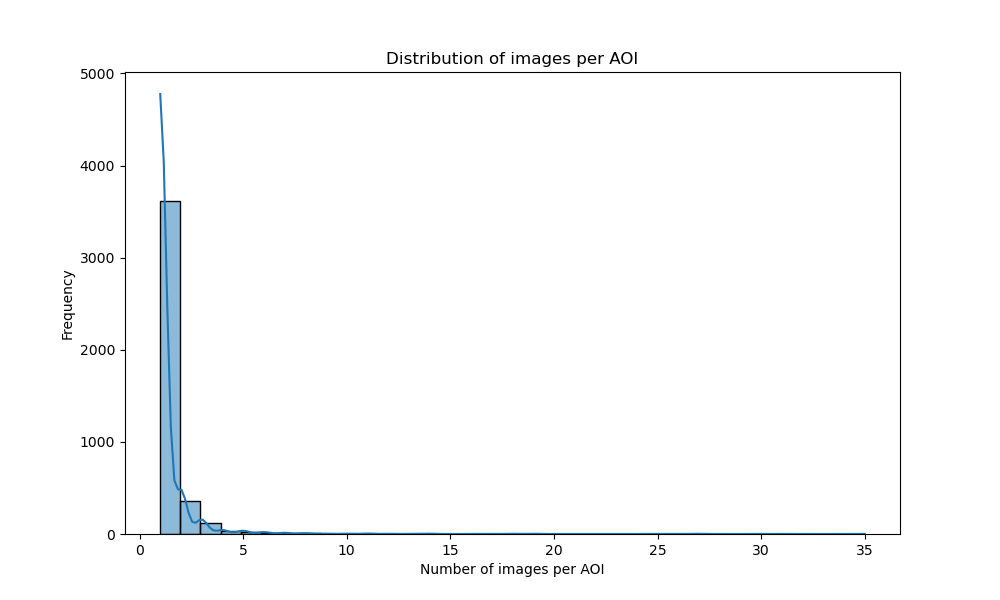
- AOI Images distribution (filtered - without groups with single image)
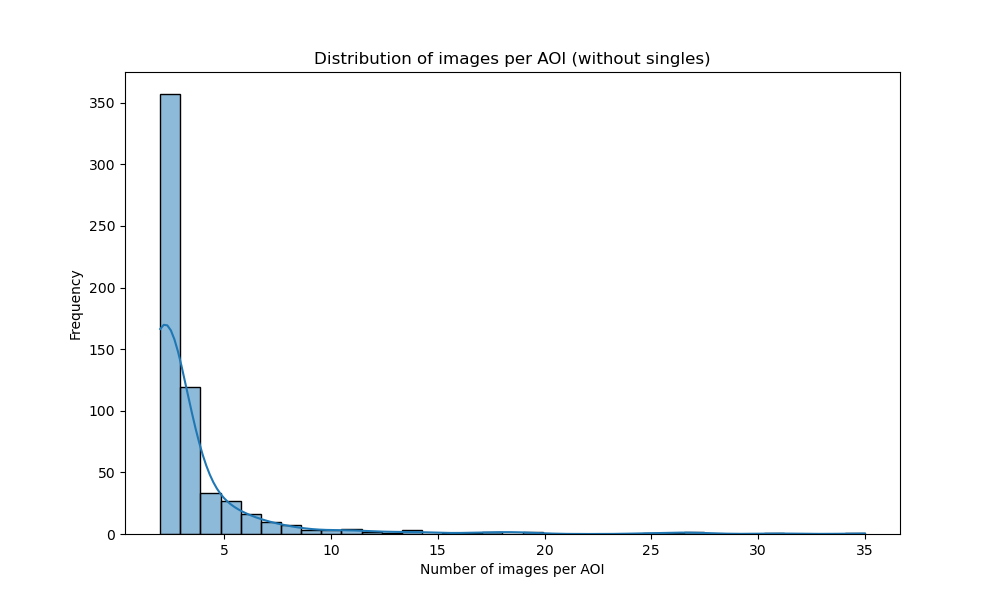
- Correlation matrix
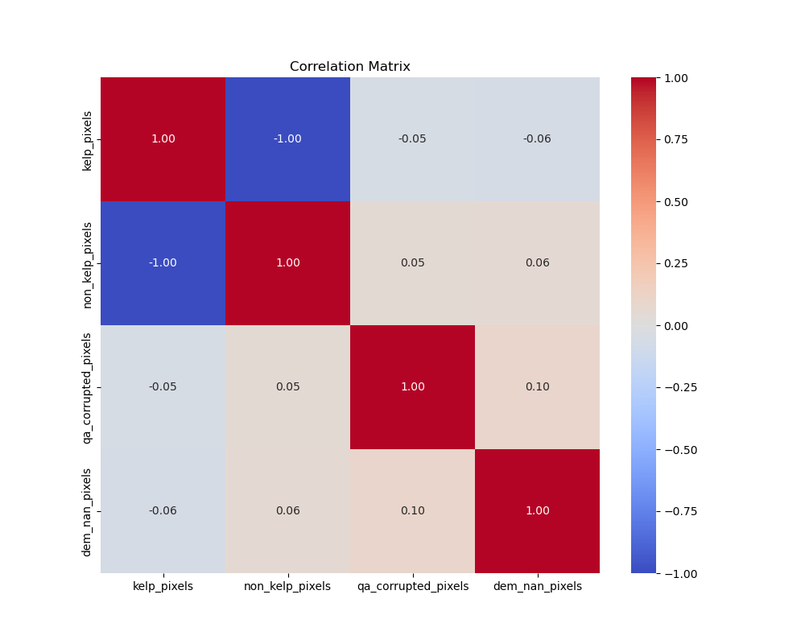
- DEM has NaNs
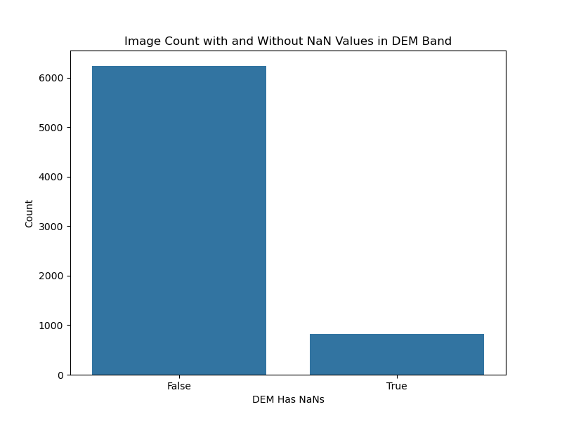
- DEM NaN pixels distribution
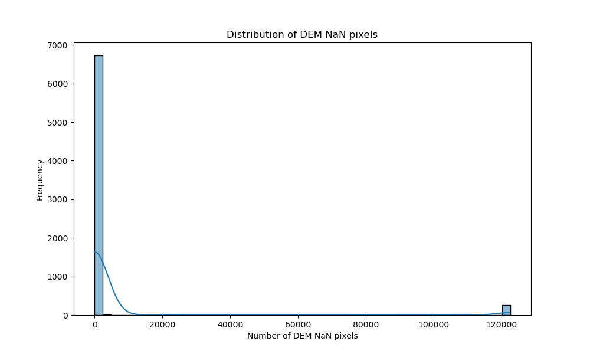
- Has Kelp

- High Kelp Pixels distribution
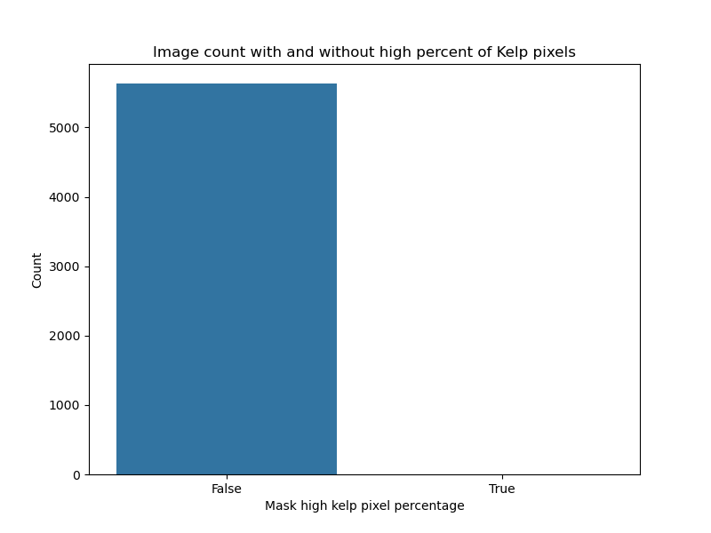
- Kelp Pixels Distribution
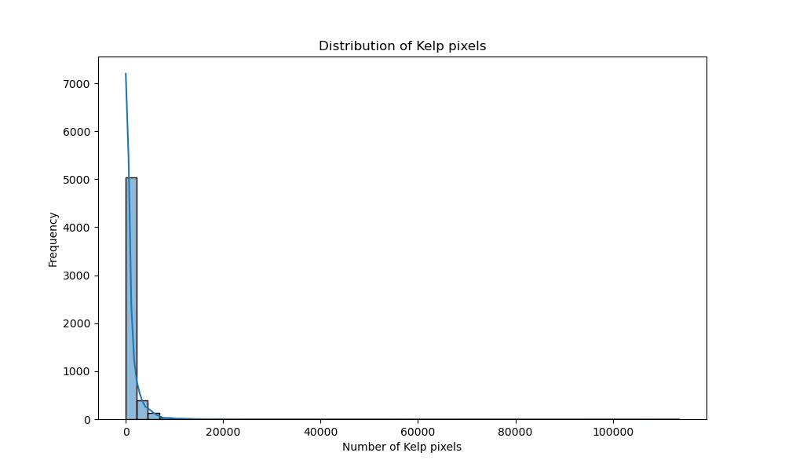
- QA corrupted pixels percentage
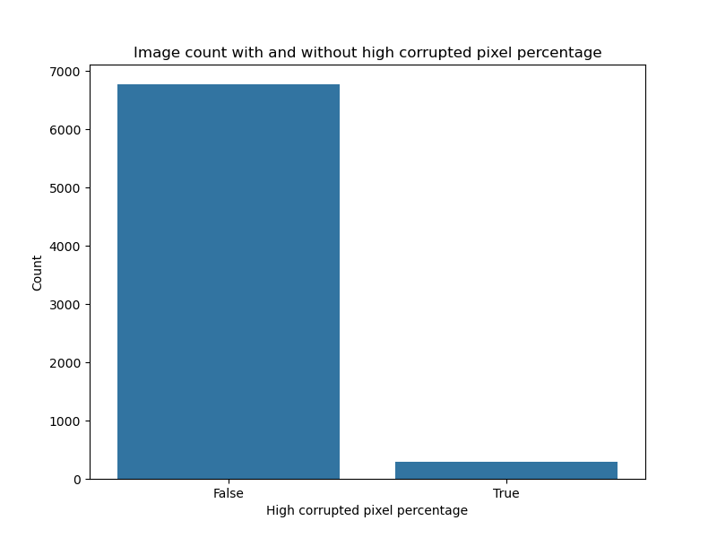
- QA OK
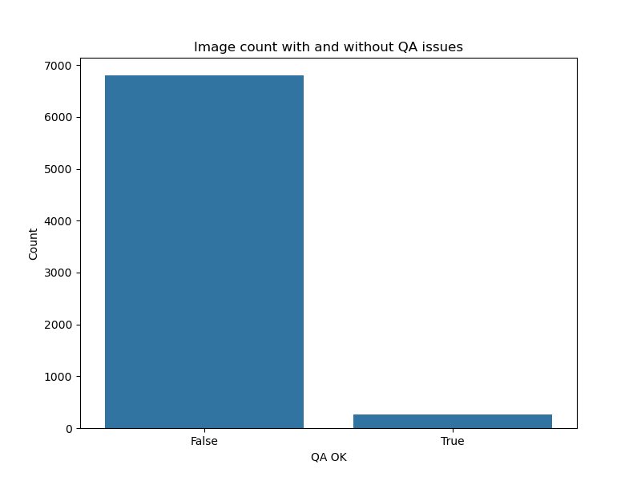
- Images per Splits
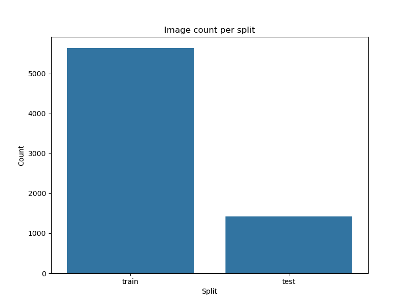
Calculate band statistics
This script calculates per-band statistics to be used for input image normalization during training and inference. Spectral indices are automatically appended to the input Tensor, this way stats for all possible channels are computed.
Note: The script will automatically try to use GPU to speed up calculation. Expect ~45x slowdowns if running on CPU!
Run it with:
make calculate-band-stats
Or:
python ./kelp/data_prep/calculate_band_stats.py \
--data_dir data/raw \
--mask_using_qa \
--mask_using_water_mask \
--fill_missing_pixels_with_torch_nan \
--output_dir data/processed
Note: The script is not perfect - for certain configurations, the resulting statistics can have NaN or Inf in them. Please adjust them by manually setting those items to reasonable values.
Stratified 10-Fold CV split
This script performs stratified 10-fold cross validation split using metadata files generated earlier.
Run it with:
make train-val-test-split-cv
Or:
python ./kelp/data_prep/train_val_test_split.py \
--dataset_metadata_fp data/processed/stats/dataset_stats.parquet \
--split_strategy cross_val \
--seed 42 \
--splits 10 \
--output_dir data/processed
Note: By default
has_kelp,almost_all_water,qa_okandhigh_corrupted_pixels_pctcolumns are used for making stratification column.